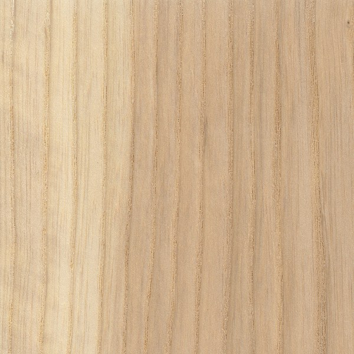

Teak
Santos Mahogany
Hard Maple

White Ash
Teak
Sometimes called Burmese Teak, this name is used to differentiate natural-grown trees (typically from Myanmar, aka Burma) from Teak grown on plantations. Used extensively in India and within its natural range for centuries, Teak has grown into a worldwide favorite. With its superb stability, good strength properties, easy workability—and most of all, its outstanding resistance to decay and rot—it’s no wonder that Teak ranks among the most desired lumbers in the world. Much like the many names and knockoffs of Mahogany, the moniker “Teak” has been affixed and assigned to a number of different woods seeking acclaim. The usual procedure is to take a wood bearing any degree of resemblance to Teak and insert a geographical location in front of the name. For instance, Cumaru is sometimes referred to as Brazilian Teak, while Rhodesian Teak bears little botanical relation to real Teak—Tectona grandis. The name Burmese Teak, however, does refer to genuine Teak.
Santos Mahogany
Despite its name, Santos Mahogany is not really related to true Mahogany (Swietenia genus), nor is it even in the Meliaceae family, as is the case with African Mahogany (Khaya genus) and Spanish Cedar (Cedrela odorata). Santos Mahogany can have a Mahogany-like appearance, though it is typically much denser, harder, and stronger than true Mahogany—and also much more difficult to work. Santos Mahogany trees, sometimes called Balsamo, are used in the production of the substance called Balsam of Peru, used as a fragrance in perfumes.
Hard Maple
In tree form, Hard Maple is usually referred to as Sugar Maple, and is the tree most often tapped for maple syrup. Sugar Maple’s leaves (pictured below) are the shape that most people associate with maple leaves; they typically have either 5 or 7 lobes, with vivid autumn coloring ranging from yellow to purplish red. Hard Maple ought to be considered the king of the Acer genus. Its wood is stronger, stiffer, harder, and denser than all of the other species of Maple commercially available in lumber form. (It’s also the state tree in four different states in the US.)
White Ash
The emerald ash borer (Agrilus planipennis), believed to have been inadvertently introduced from Asia sometime in the 1990s, was first detected in Michigan in 2002. Lacking natural predators, uncontrolled populations of this invasive species spread very rapidly throughout North America, devastating local populations of ash trees. The beetles’ larvae bore into a tree and feed on the inner bark, eventually killing the entire tree. The insects are responsible for the deaths of hundreds of millions of ash trees across the United States and Canada. Green Ash and Black Ash trees are preferentially attacked by the insects, followed by White Ash and Blue Ash. White Ash has excellent shock resistance, and along with hickory (Carya spp.), it is one of the most commonly used hardwoods for tool handles in North America—particularly in shovels and hammers where toughness and impact resistance is important.